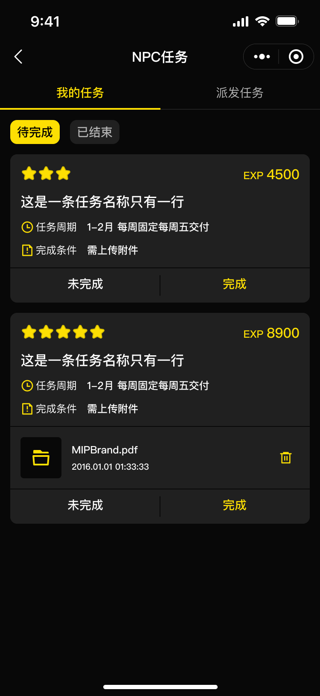
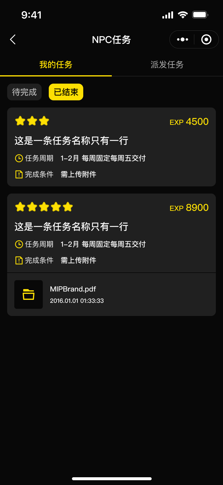
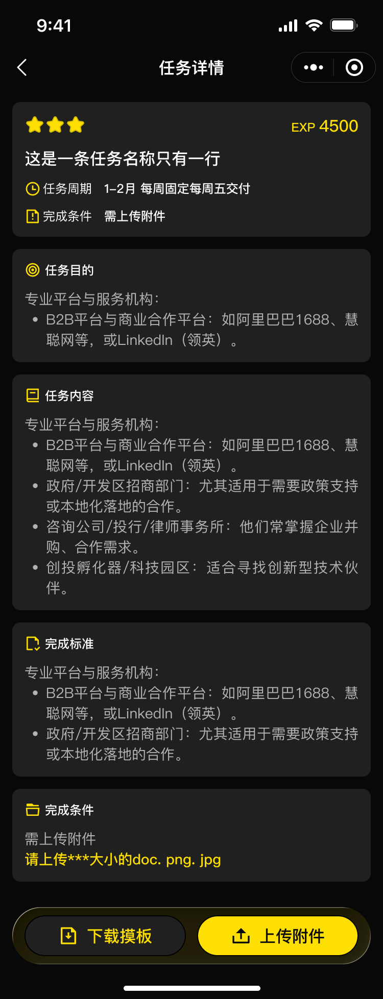
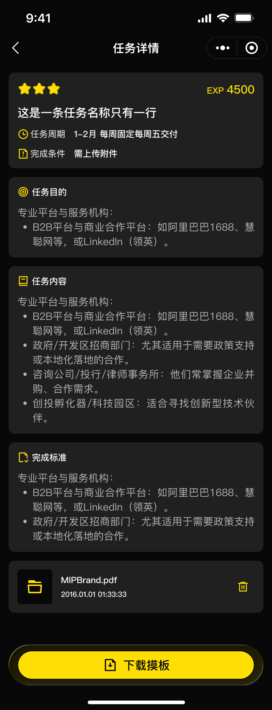
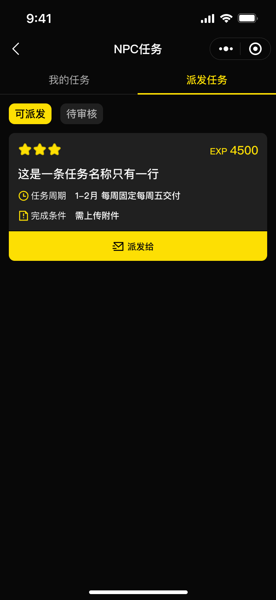
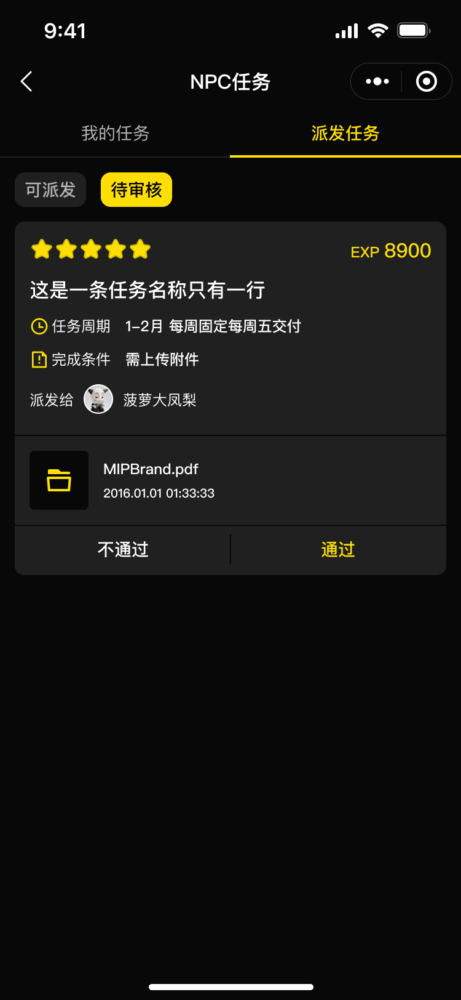
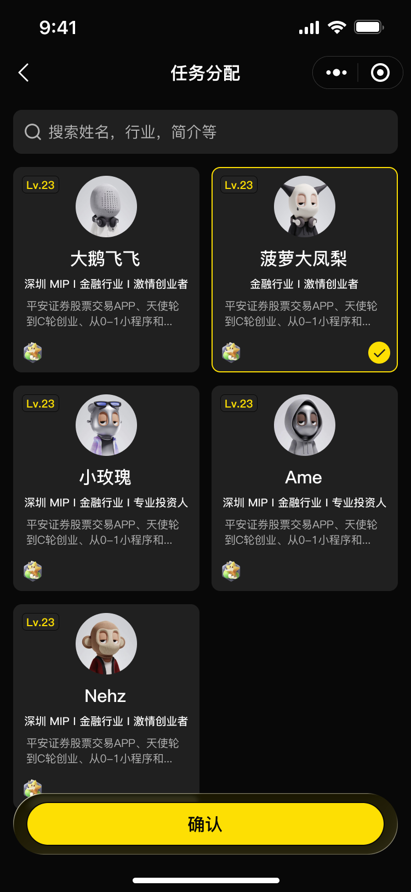

① 核心链路已闭环且与 admin v1 PRD 第 9 章「任务管理」高度一致：后台配置任务卡 → 发布 → 派发（单次/批量/每周）→ 玩家在小程序完成 → 负责人审批 → 经验值/贡献值同事务入账，幂等、审计、退回重提、奖励失败重试均已实现。
② 主要偏差 4 项（详见第 6 节，均需决策或排期）：D1 派发/审核载体（两份 PRD 口径相反，现实现走管理后台，Figma 的小程序 NPC 视角页未做）；D2 奖金只做线下发放记录，PRD 字面是「一次性发放」；D3 附件/模板仅支持图片（PRD/Figma 含 doc/pdf 与文件元数据）；D4 任务消息缺「收到任务 / 即将到期 / 被退回」3 类通知。
③ 另有两处弱约束与 PRD 不符（D5 负责人列表范围、D7 玩家门禁）与若干记录性小差异。
| 角色 / 术语 | 定义（依据） | 载体 |
|---|---|---|
| 玩家 | 付费会员（开通玩家后解锁 NPC 任务权益）；C 端只感知「接任务-做任务-领奖励」 | 微信小程序「我的 → NPC任务」 |
| NPC / 笨笨老大 | admin v1 PRD §14：NPC／笨笨作为后台账号角色，不作为小程序用户角色；按权限执行任务派发、任务验收和用户查询。每个任务必须关联一个「笨笨老大」，由其分配和审批 | admin-web 管理后台（角色绑定 tasks.manage 等能力） |
| 平台管理员 | 配置任务卡（内容/周期/负责人/范围/奖励/模板）、发布/下架，可跨负责人管理 | admin-web |
| 任务卡 | 任务模板：名称、星级（1–5）、目的、内容、完成标准、周期（开始/结束/每周交付时间）、关联笨笨老大、适用服务器、奖励配置（经验值/贡献值/奖金，至少启用一种）、是否必传附件、附件模板 | admin-web 配置，小程序只读展示 |
| 派发 / 提交 / 审批 | 派发=把任务指派给成员（记录派发人、接收人、时间、方式、任务版本）；提交=用户上传附件/内容进入待审批；审批=关联笨笨老大通过或退回 | 派发与审批在 admin-web；提交在小程序 |

src/packages/member/mip-tasks/index.wxml）





| # | PRD 要求（admin v1 §9 / 小程序 PRD #48–53） | 实现证据 |
|---|---|---|
| A1 | 任务配置字段：名称/星级(1–5)/目的/内容/完成标准/周期(开始·结束·每周交付)/关联笨笨老大/适用服务器/奖励/必传附件/附件模板 | admin-web/src/features/form-pages/task-edit-form-page.tsx、cloudfunctions/mip-tasks-api/domain/repository.js saveTask |
| A2 | 每个任务必须关联一个笨笨老大 | 服务端 TASK_OWNER_REQUIRED（workflow.js submit/assignTask、repository.js saveTask 校验负责人有效） |
| A3 | 支持按用户、角色、服务器或标签选择接收人；单次、批量和每周周期派发；记录派发人、接收人、派发时间、派发方式和任务版本 | workflow.js assignTask（userIds/roleIds/serverIds/tagIds ≤100、single/batch/weekly、mip_task_assignments 全字段）+ admin-web 派发弹窗 |
| A4 | 所有 NPC 任务必须由该任务关联的笨笨老大审批；可填写审批备注 | workflow.js review → assertTaskOwner（负责人本人或 tasks.review.any）；remark ≤500 存 mip_task_submission_reviews |
| A5 | 审批退回时不发放任何奖励，保留原提交内容和附件 | rejected 仅更新状态与备注；rejected 态允许重提（UPDATE 同一提交行、version+1） |
| A6 | 奖励使用任务提交记录做幂等校验，不得重复发放 | grantRewards 按 source_event_type='task.completed'+submission.id 查重；全链路 idempotencyKey 事务内领取 |
| A7 | 奖励失败时记录失败类型和原因，并支持按权限重试 | reward_failed + retry_log_json + admin.retrySubmissionReward（仅 reward_failed 可重试） |
| A8 | 任务完成流水字段（玩家ID/任务星级/负责人/提交时间/附件/审批结果/实际奖励/处理结果） | admin.listCompletions / getCompletion / exportCompletions；admin-web 完成记录页 + 导出 |
| A9 | 金额、奖励、完成状态由服务端决定（领域规则：会员/订单/资格不能由客户端计算） | 提交与奖励值全部服务端事务写入，客户端仅传 taskId + attachmentAssetId |
| A10 | 审计日志记录任务派发和验收 | assignTask / review 均写 writeAudit（task.assigned、task.submission.*） |
| A11 | 任务状态：已发布、已下架或已结束 | PUBLISHED/UNPUBLISHED/DELETED + 时间推导 is_ended（列表/详情/完成三处一致校验） |
| A12 | 消息：经验值到账 | growth.changed → outbox 投影 growth-changed / growth-level-up 站内信 |
| A13 | 成长等级门槛（PRD §4.3 任务规则后台配置） | eligibleLevelIds + 完成时按服务端当前经验重验（TASK_LEVEL_NOT_ELIGIBLE），客户端不能提交等级 |
| A14 | 小程序 #48 我的任务列表 / #49 待完成(操作完成/未完成)·已结束 / #50 详情·下载模板·上传附件 | src/packages/member/mip-tasks/（列表双页签+chips+操作条、详情四面板+模板+附件+提交），UI 对照 Figma 1725:18357/18445/18515/18577 |
| # | 差异 | PRD / 设计稿口径 | 当前实现 | 状态与建议 |
|---|---|---|---|---|
| D1 | 派发与审核的端载体冲突 | 小程序 PRD #51（P0：成员列表、搜索、点击确认后派发）+ Figma 1725:18634/18676/18736 为小程序 NPC 视角页；admin v1 PRD §14 则定义 NPC／笨笨是后台账号角色、不作为小程序用户角色——两份 PRD 自身口径相反 | 小程序「派发任务」页签点击弹窗引导到电脑端管理后台；派发（成员/标签/角色/服务器选择、单次/批量/每周）与审批（通过/退回/重试）全部在 admin-web；docs/mip/FIGMA_MAP.md 已声明「任务配置与派发只在 React Web 提供」 |
待客户确认实现选择了后台口径且已闭环。需客户拍板：维持后台派发（更新小程序 PRD/设计稿口径），或补小程序 NPC 派发/审核页 |
| D2 | 奖金发放方式 | admin v1 §9：审批通过后按任务配置「一次性发放经验值、贡献值和奖金」；流水展示实际奖金 | 经验值/贡献值同事务入账；奖金仅写 OFFLINE_PENDING 线下发放记录，无线上支付；admin-web 表单也标注「奖励配置（奖金线下发放）」 |
待确认与 PRD 字面不符（PRD 未写线下）。确认是更新 PRD 口径，还是需要补线上发放通道 |
| D3 | 附件与模板只支持图片 | Figma 完成条件提示「请上传***大小的doc. png. jpg」、附件卡示例 MIPBrand.pdf；admin v1 §9 模板「展示文件名称、格式、大小和上传时间」 | 附件仅接受本人 READY 图片素材（≤10MB，mip-media TASK_ATTACHMENT）；模板仅 TASK_TEMPLATE 图片、保存到相册；附件文件名/时间后端未存储 → 列表与详情的附件卡按当前契约恒不渲染、附件不可删除（代码内已注明「设计先行」占位） | 待确认范围确认是否必须支持 doc/pdf 与文件元数据、附件删除通道；否则更新 PRD/设计稿口径为图片 |
| D4 | 任务消息通知缺失 3 类 | admin v1 消息章节任务类通知：收到任务、即将到期、被退回、验收通过、经验值到账 | 派发动作不写 outbox（无「收到任务」）；退回不写通知（无「被退回」）；无「即将到期」提醒；task.completed/published/deleted/unpublished 四类事件在投影器列为无需投影；「经验值到账」经 growth-changed 站内信覆盖 ✓ | 功能缺口需排期补 3 类通知（订阅消息/站内信通道已有，缺事件与模板） |
| D5 | 「笨笨老大仅见本人任务」未在服务端强制 | admin v1 §9：笨笨老大的待分配任务列表仅展示与本人关联的任务 | admin 任务列表的 assignedOwnerId 只是可选筛选；任何具备 tasks.manage 的账号可列全部任务。动作层有约束：审批需负责人本人或 tasks.review.any、派发需本人或 tasks.assign.any | 弱约束需确认是否按角色在服务端收紧列表范围（涉及权限模型，属安全边界） |
| D6 | 提交状态机粒度 | PRD 8 态：待开始、进行中、待提交、待审批、已通过、已退回、已过期、奖励失败 | 提交层 4 态（pending_review/approved/rejected/reward_failed）+ 列表态 NOT_STARTED/AVAILABLE/ENDED；「进行中/待提交/已过期」由时间与派发状态隐式表达，过期后提交直接报「任务已截止」 | 记录即可语义覆盖，字段粒度不同；若运营需要按「已过期」筛选提交记录再补 |
| D7 | 玩家专属门禁是软的 | 用户流程总览 §6.8：NPC 任务为玩家权益，嘉宾无入口 | 小程序入口仅登录门禁（VIEW_RESTRICTED_PROFILE），无玩家身份校验；服务端按「是否有派发记录」过滤（嘉宾未被派发则自然为空）；但派发接收人解析不过滤玩家身份——给嘉宾派发后嘉宾也能完成 | 待确认确认派发范围是否应限定玩家身份（服务端加校验成本很低） |
| D8 | 记录性小差异 | Figma 卡片周期文案「1–2月 每周固定每周五交付」；已结束详情仍显示上传附件按钮 | periodText 仅「每周 X / 截止时间 / 不限」；详情仅 AVAILABLE 可上传附件（更严格，防无效提交）；列表星级缺省按经验值推导（仅兼容旧数据） | 记录即可不影响主流程 |
· 管理后台 PRD v1（第 9 章 任务管理、第 14 章 后台账号管理 NPC／笨笨身份、消息章节任务通知）：docs/mip/sources/github/20260929-admin/admin-v1-prd.html（同 ~/project/ame-project/mip-minip-dev/docs/管理后台的原型和PRD/MIP 小程序后台管理系统 PRD - v1 (纯PRD).html）
· 小程序 PRD v1.1.0 #48–53： docs/mip/sources/github/PRD-v1.1.0.md
· 用户流程总览 J5 子流程 NPC 任务（J7-A1/A2/A3）与 §6.8 边界： ~/project/ame-project/mip-minip-dev/docs/PRDs/里程碑1+2_用户流程总览_客户对齐版_V1.0.md
· 需求基线/覆盖矩阵： docs/mip/REQUIREMENTS.md（Q-ADMIN-05/13）、docs/mip/COVERAGE_MATRIX.md（T01–T05）、docs/mip/FIGMA_MAP.md
· 小程序页面： src/packages/member/mip-tasks/index.ts|index.wxml、.../detail/index.ts|index.wxml；入口 src/pages/profile/index.ts:852
· 领域模块： src/modules/mip-tasks/（types/dto/module/gateway/cloudbase-gateway）
· 服务端： cloudfunctions/mip-tasks-api/（domain/workflow.js 状态机与奖励、domain/repository.js 列表与校验、domain/handler.js 动作表、README.md 边界）
· 管理后台： admin-web/src/features/operations-pages/task-management-page.tsx、task-approval-page.tsx、admin-web/src/features/form-pages/task-edit-form-page.tsx、admin-web/src/modules/admin-task-management.ts
· 通知投影： cloudfunctions/mip-outbox-worker/domain/projector.js（task.* → NO_PROJECTION_REQUIRED；growth.changed → growth-changed/growth-level-up）
· Figma 文件「我的」页（69:4972），节点 1725:18357 / 1725:18445 / 1725:18515 / 1725:18577 / 1725:18634 / 1725:18676 / 1725:18736，PNG 导出于本目录 figma/（2x）。